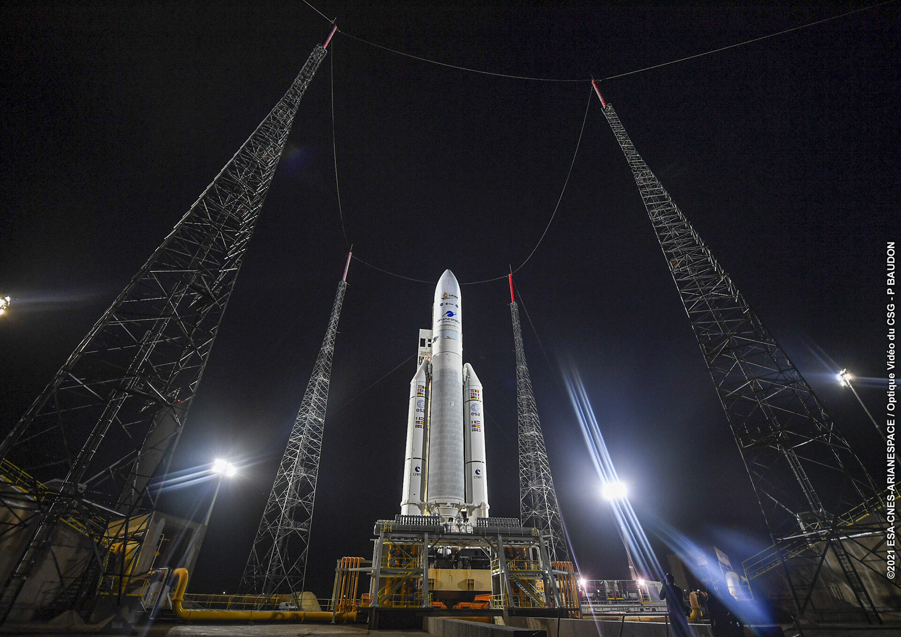
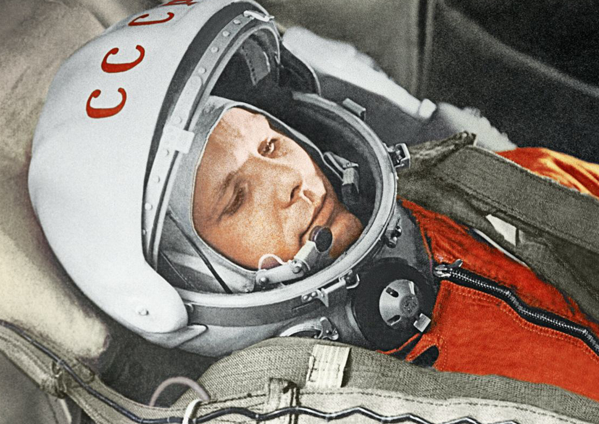

Agencje kosmiczne
- NASA
- ESA
- JAXA
- Roskosmos
- CNSA
 NASA
NASA
NASA
... czyli National Aeronautics and Space Administration, to agencja kosmiczna Stanów Zjednoczonych, założona w 1958 roku.
Odpowiada za program kosmiczny USA i badania przestrzeni kosmicznej. Jej misje zmieniły sposób, w jaki patrzymy na wszechświat.
Odwiedź oficjalną stronę NASA!
Najważniejsze misje i osiągnięcia:
-
Misja Apollo 11
Pierwsze lądowanie człowieka na Księżycu.
-
Teleskop Hubble
Obserwacja wszechświata od 1990 r.
-
Perseverance
Odkrywanie tajemnic Marsa.
-
Sonda Parker
Najbliżej Słońca w historii ludzkości.
ESA
European Space Agency to międzynarodowa organizacja zajmująca się badaniami przestrzeni kosmicznej, zrzeszająca 22 państwa członkowskie Europy. Została założona w 1975 roku i od tego czasu prowadzi różnorodne misje kosmiczne. ESA często współpracuje z NASA, JAXA czy CNSA, tworząc wspólne projekty naukowe i technologiczne.
Odwiedź oficjalną stronę ESA!
Najważniejsze misje i osiągnięcia:
-
Rosetta
Misja, która jako pierwsza w historii dotarła do komety.
-
Copernicus
Program monitorujący Ziemię przy pomocy satelitów Sentinel.
-

Ariane 5
Rakieta nośna, która przez dekady wynosiła na orbitę satelity.
-
BepiColombo
Najbardziej zaawansowane badania Merkurego w historii.
JAXA
Japan Aerospace Exploration Agency to narodowa agencja kosmiczna Japonii, założona w 2003 roku z połączenia trzech wcześniej istniejących organizacji.
JAXA słynie z precyzyjnej inżynierii i innowacyjnych misji, często współpracując z NASA, ESA i innymi partnerami.
Odwiedź oficjalną stronę JAXA!
Najważniejsze misje i osiągnięcia:
-
Hayabusa
Pobranie próbek z asteroid i dostarczenie ich na Ziemię.
-
SLIM
Precyzyjne lądowanie na Księżycu w 2024 roku.
-

Kibo
Największy moduł do badań na MSK.
-
H-IIA / H3
Rodzina japońskich rakiet nośnych.
Roskosmos
To narodowa agencja kosmiczna Rosji, powstała w 1992 roku po rozpadzie ZSRR, bazując na dorobku radzieckiego programu kosmicznego. Agencja odpowiada za eksplorację kosmosu, rozwój rakiet i statków kosmicznych, a także za obecność Rosji na Międzynarodowej Stacji Kosmicznej.
Odwiedź oficjalną stronę Roskosmos!
Najważniejsze misje i osiągnięcia:
-

Pierwszy człowiek w kosmosie
W 1961 roku Jurij Gagarin okrążył Ziemię.
-
Sputnik 1
Pierwszy sztuczny satelita na orbicie.
-
Program Sojuz
Statki transportujące załogi z różnych krajów na MSK.
-

Misje Łuna
Powrót Rosji do eksploracji Księżyca.
CNSA
...czyli China National Space Administration, to agencja kosmiczna Chińskiej Republiki Ludowej, powstała w 1993 roku. W ciągu trzech dekad CNSA zbudowała jeden z najbardziej ambitnych i dynamicznych programów kosmicznych na świecie, obejmujący eksplorację Księżyca, Marsa i budowę własnej stacji kosmicznej.
Odwiedź oficjalną stronę CNSA!
Najważniejsze misje i osiągnięcia:
-
Program Chang'e
20-letni program bezzałogowych i załogowych badań Księżyca.
-
Stacja Kosmiczna Tiangong
Długoterminowe misje załogowe i eksperymenty naukowe.
-
Tianwen-1
Misja na Marsa z orbiterem, lądownikiem i łazikiem.
-
Beidou
Niezależny chiński system nawigacji satelitarnej.
Maszyny w kosmosie
Naciśnij na planetę/gwiazdę, by dowiedzieć się o satelitach, łazikach, sondach i innych maszynach, których zadaniem jest (lub było) badanie jej.